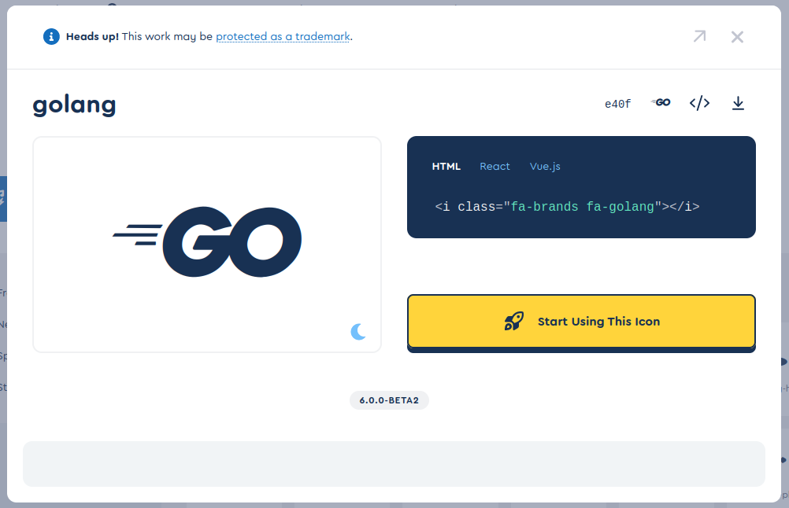

Font Awesome 6 を導入した

先日 Font Awesome 6 がリリースされた。
というわけで，このブログにも導入した。 まぁ，見た目はほぼ変わらないんだけどね。
Font Awesome 6 の目玉は Thin Style が登場したことだろうか。 これはなかなか面白いと思う。
なんとなく思いついて検索してみたら Go 言語のアイコンもあった。

たとえば，こんな感じに使える。
<span class="fa-4x" style="color:#00aed9;"><i class="fa-brands fa-golang"></i></span> |
|---|
HTML + Font Awesome でスライドを書いてる人は，はかどるかもしれない（笑） ちなみに Rust とかのアイコンは以前からあったんだよねぇ。
ブックマーク
- Go’s New Brand - The Go Programming Language : Go ロゴの取り扱いについてはこちらを参照のこと